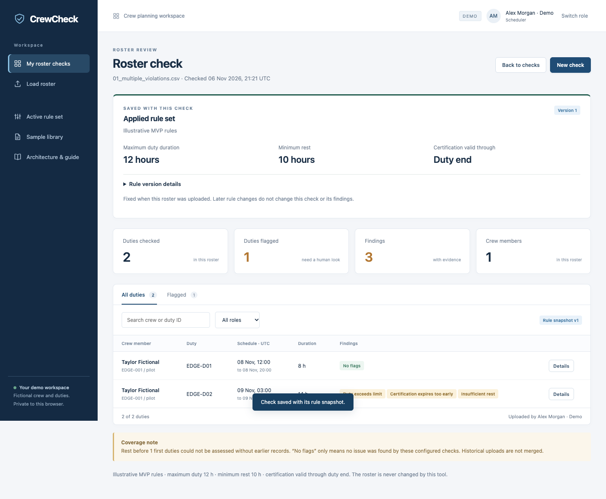

Live demo runbook
Monday 9 November · 11:00–11:30. Show the working upload and review process, demonstrate the requested exception cases, and agree the gaps to address before the final presentation.
Meeting order
| Time | Show | Outcome |
|---|---|---|
| 11:00–11:03 | Architecture and sequence diagram | Explain the two human roles, deterministic checks, and saved results before opening the app. |
| 11:03–11:06 | Normal roster: 05_corrected_roster.csv | Upload → preview → Run roster check → 0 findings. |
| 11:06–11:11 | Multiple findings: 01_multiple_violations.csv | Show three independent findings on a single duty, with evidence. |
| 11:11–11:16 | Missing data, duplicates and recovery | Show blocked input versus missing evidence; re-upload the corrected file. |
| 11:16–11:20 | Manager history, audit trail and settings | Reopen the scheduler's check and show the saved rules. Explain the configurable thresholds. |
| 11:20–11:22 | Current limitations | Make the regulatory, historical-data and identity boundaries explicit. |
| 11:22–11:30 | Feedback and next decisions | Confirm business expectations and record gaps with an owner and next step. |
Before the meeting
- Use the repository sample pack. Keep
samples/edge-casesopen in Finder. Each scenario has CSV and Excel versions; choose one file at a time in Browse files. - Start the hosted preview using the README and open it in the browser you will present. Choose Scheduler. Keep that same browser workspace when switching to Manager; another browser or device has separate history.
- Confirm 12 h maximum duty, 10 h minimum rest, certification through duty end. This verification used v1. If a later version has identical values, counts should match but the displayed version number will differ.
- Keep the architecture/sequence slides ready. Open this guide and the saved screenshots as a fallback. Recheck the preview shortly before the meeting.
- The demo supports 30 accepted uploads per workspace. Use a fresh browser profile or private window if rehearsals have filled it; do not delete existing history. Do not use the sample shortcut when demonstrating file upload.
Sample numbers identify cases, not presentation order. For Excel support, upload samples/review_roster.xlsx: six findings under the initial policy. Use a fresh demo workspace for baseline counts.
Presenter walkthrough
1. Establish the purpose and architecture
“This is a working prototype for reviewing rosters. A crew scheduler uploads a file, the system checks explicit rules, and a planning manager can revisit the saved results. The tool reports findings; it does not change the schedule.”
Use the architecture and user sequence slides. The hosted preview runs one Cloudflare Worker with SQLite-based D1 storage. The separate local reference uses FastAPI and SQLite. PostgreSQL and company authentication are planned for internal deployment.
2. Show a valid input and a result with no configured flags
- As Scheduler, choose Load roster → Browse files. Select
05_corrected_roster.csv. - Show the validated preview: 2 duties, 1 crew member, normalized to UTC, and the captured rule version.
- Choose Run roster check. Expected: 0 flagged duties, 0 findings.
- Point to the coverage note: the first duty has no preceding rest evidence in this file.
“This file passes the checks currently configured. That does not certify compliance with every applicable aviation rule.”
3. Show several findings on one duty
- Choose New check and upload
01_multiple_violations.csv. Run the check. - Expected: 2 duties checked, 1 duty flagged, 3 findings. Explain why finding count and flagged-duty count differ.
- Choose Flagged and open Details for
EDGE-D02. Scroll inside the drawer to show all three findings.
| Finding | Evidence | Configured check |
|---|---|---|
| Duty exceeds limit | 9 November, 03:00–17:00 UTC = 14 h | Maximum 12 h; exceeded by 2 h |
| Certification expires too early | Expiry 12:00 UTC; duty ends 17:00 UTC | Valid through duty end |
| Insufficient rest | Previous duty ends 8 November at 20:00 UTC; next starts 9 November at 03:00 UTC = 7 h | Minimum 10 h |
“Each finding has its own calculation and source evidence. The scheduler reviews all three before deciding what action is needed outside the tool.”
4. Distinguish invalid input from incomplete evidence
- Upload
02_missing_required.csv. Show row 2 missing crew_name and row 3 missing duty_start. There is no Run button for this rejected input. - Upload
04_duplicate_records.csv. Show the duplicate crew/duty combination at row 4. - Upload
05_corrected_roster.csvagain. Confirm validation succeeds and run it: 0 findings. This is a new uploaded snapshot, not an edit of the original check. - Upload
03_missing_certification.csvand run it. Expected: 1 finding, Certification evidence missing. Open Details for EDGE-D02.
“A missing required field prevents us from evaluating the roster. Missing certification evidence is reported for review; we do not treat it as proof of an expired certificate.”
Manager review and discussion
5. Reopen history and show audit evidence
- Select Switch role → Explore as Manager in the same browser.
- In Check history, search filenames for
01_multiple_violations, then Apply filters. Select View check on the run just created. - Show its 3 findings, original rule snapshot and uploaded-by role. Open EDGE-D02 and show the evidence again. Reopening reads the saved result.
- Open Audit trail. Show an upload event and its check event, including the rule version and findings count. Demo roles are not verified employee identities.
- Open Rules & thresholds. Show the editable values and required reason field. Explain that saving creates a new version for future uploads; existing previews and results keep their captured rules. Keep the values unchanged during the core demo.
“Managers can revisit what was found and which rules were used at that time. Today, this history is organized by roster check. We would like to confirm whether you also need a single history view for each crew member across rosters.”
6. State the current boundaries
- Rules: thresholds are illustrative. The applicable approved rulebook, operation type and crew-role-specific requirements still need confirmation.
- Historical context: first-duty rest is unknown without preceding duties in the same file. The checker does not merge historical uploads or implement cumulative duty windows.
- History: results can be reopened per roster. A unified crew-level timeline, acknowledgements, remediation ownership and resolution tracking are not implemented.
- Duplicates: repeated crew/duty keys inside one file are rejected. The same file can be uploaded again as a new snapshot; cross-file revision and deduplication policy remains to be agreed.
- Identity and storage: selectable demo roles and browser-isolated workspaces are used publicly. Company authentication and PostgreSQL migration remain future work.
Questions to close with
- Does this upload and review workflow fit the scheduling team's day-to-day process?
- Should historical issues be organized by roster, by crew member across rosters, or both?
- Should a file with invalid rows be rejected in full, or should valid rows be accepted separately?
- How should revised rosters and repeated uploads relate to earlier checks?
- Which approved rules and qualification source should replace the illustrative demo settings?
If time or connectivity becomes a problem
Protect the main upload, one multi-finding Details view, a rejection and manager history. Skip the optional boundary example and do not change thresholds mid-demo. If the live site is unavailable, show the saved screenshots below and clearly identify them as the 6 November verification, not a live run. Record the failure for follow-up.
Multiple findings · Duplicate rejection · Saved history · Historical rules


Verification matrix
Verified on 6 November 2026 in real Chrome against the combined team checkout, using file-input uploads to the real local and hosted backends. See the integration verification record for exact outcomes. The prior public demo remains a separate reference.
Optional flexible import demonstration
The current demo also accepts multiple worksheets, custom column names and Excel date cells. Upload the Excel import example, select Crew duties, map the fields and choose America/New_York. The preview shows 11:00–19:00 UTC and the check reports zero findings. The 601-duty CSV demonstrates removal of the former row ceiling. Use these only if file compatibility is raised; the main meeting sequence remains unchanged. Detailed steps.
Optional boundary demonstration
Upload 06_exact_boundaries.csv. Each duty is exactly 12 h; the interval is exactly 10 h; the certificate remains valid until the exact end of the final duty. Expected: no findings. The first-duty rest coverage warning remains.
